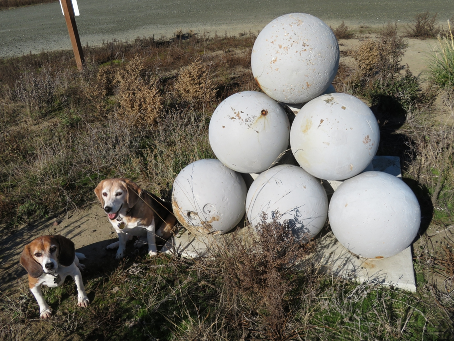

<--Previous Up Next-->

This stack of cannonballs is on Alameda Island a few yards east of the San Francisco border, but must surely have been intended to mark it.
Huxley Beagle sanfrancisco Wallace Beagle